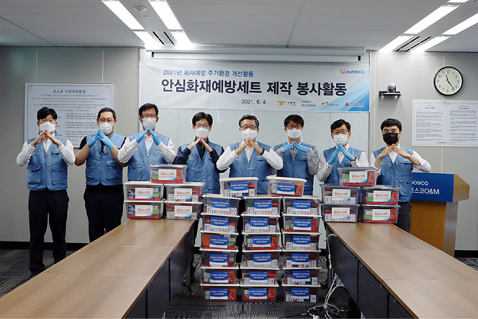
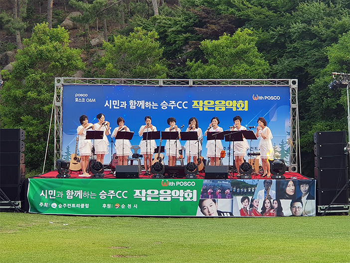
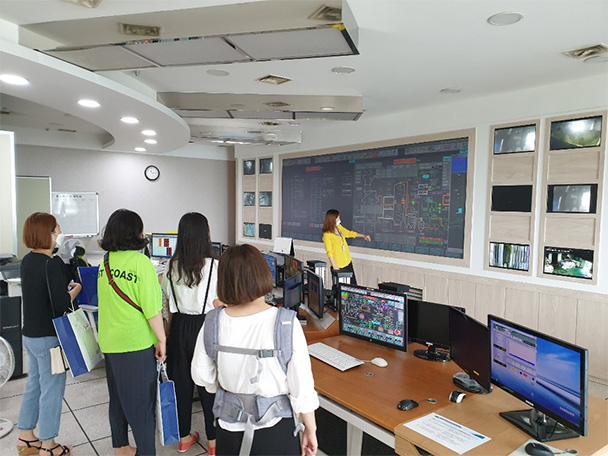
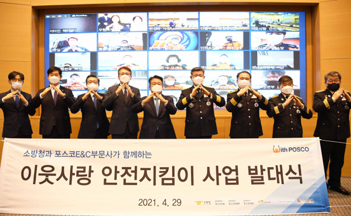
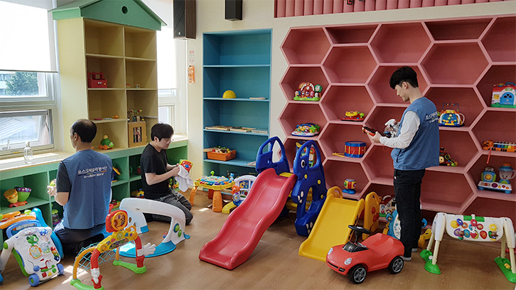

사회와 인류에 책임을 다하는 기업시민 포스코엠텍
미래세대 육성, 지속가능한 환경보호, 지역사회 공생가치 창출을 중점으로 역량을 집중하고 있습니다.
주요 활동내역
-

- 비대면 공헌사업
- 언택트 문화 및 시대에 맞춰 어플(app)을 활용한 걸음 기부, 안전, 화재예방 키트 제작 등 패러다임 변화에 발맞춘 비대면 공헌 활동을 실시하고 있습니다.
-

- 지역사회 상생활동
- 지역사회와 상생하여 동반성장할 수 있도록 문화공간 조성, 골프꿈나무 지원 등으로 골프산업 인식개선과 지역주민들에게 다양한 기회를 제공하고 있습니다.
-

- 환경체험스쿨
- 올바른 자원 재활용 인식을 전파하는 활동으로써, 분리수거, 재활용 체험 교육, 견학 등으로 환경기초시설의 중요성과 자원순환 이해도를 확산시키는 활동입니다.
-

- 민관협력사업
- 포스코 그룹사, 정부/공공기관, 비영리기관 등 민관 협업을 통한 사회공헌 사업을 추진하며 사회적 임팩트 확산을 제고하고 있습니다.
-

- 우리집을 부탁해
- 시설관리 전문 역량을 활용해 시설물 안전진단과 보수 작업을 지원하는 지역사회에 재능기부하는 사업입니다.
기부금 현황